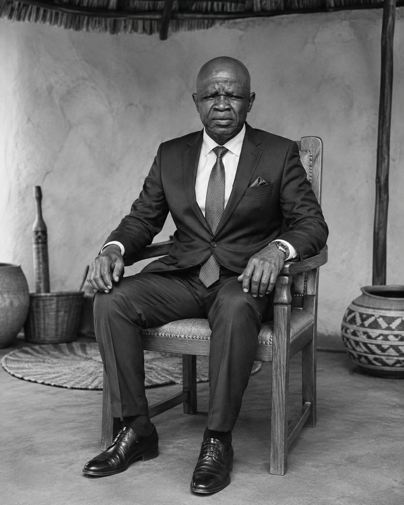

Peace
A village where neighbours and newcomers are expected to live together with care.
Balobedu heritage · Mahasha leadership
Ga-Modjadji · Limpopo · South Africa
A traditional village shaped by living heritage, community and leadership under the Modjadji Queenship.
01 · Our village
Mothomeng is a historic village in Ga-Modjadji, Limpopo, connected to the traditional leadership structures of Bolobedu and the Modjadji Queenship.
The village forms part of the Greater Tzaneen Local Municipality in Mopani District. It is home to people from different cultural backgrounds, including Balobedu, Tsonga, Venda and others.
People who wish to live, invest, build, trade, farm or conduct lawful business are welcomed with respect for village laws, traditions, leadership and the shared values of peace and prosperity.
02 · Our Balobedu heritage
The Balobedu, also known as Lobedu, are a people of Limpopo historically associated with the Modjadji Rain Queen tradition.
According to local oral history
Approximately500years
Local oral history remembers Mothomeng as a village with roots extending back approximately five centuries.
The remembered age of the village and the sequence of the earliest Mahasha leaders are preserved through community memory and traditional oral accounts. They are presented here as local oral history, not as independently documented historical fact.
03 · Mahasha leadership timeline
The Mahasha headmanship lineage, as remembered in Mothomeng’s local oral history.
The sequence above follows the village’s oral-history account.

04 · Leadership today
Village Headman · Mothomeng Village
Mr. Mapolokwane Aubrey Mahasha is the current Headman of Mothomeng Village under the Modjadji Queenship. Traditional leadership, community, residence and business enquiries may be directed through the village contact channel.
“Leadership rooted in heritage, peace and the shared prosperity of the community.”Email the village office
05 · Mothomeng today
A village where neighbours and newcomers are expected to live together with care.
Respect for one another, for cultural traditions and for traditional leadership.
Different cultural backgrounds sharing one community and a common home.
Responsible growth through residence, farming, trade and lawful enterprise.
Community notice ·
Construction and renewal of gravel roads are ongoing in the area. Community members, residents and visitors are asked to take care around heavy vehicles.
06 · Living in Mothomeng
Mothomeng welcomes people who wish to establish a home, invest, farm, trade or conduct lawful business. Everyone who comes to the village is expected to honour village laws, community values and leadership structures.
Make an enquiry07 · Location
The Mothomeng Royal House is located in Ga-Modjadji in Limpopo Province, within the Greater Tzaneen Local Municipality and Mopani District.
08 · Contact
For leadership, residence, business, heritage or general community enquiries.
The village office has not set a guaranteed response time. If you need to follow up, email the office and include the same name used in your enquiry.